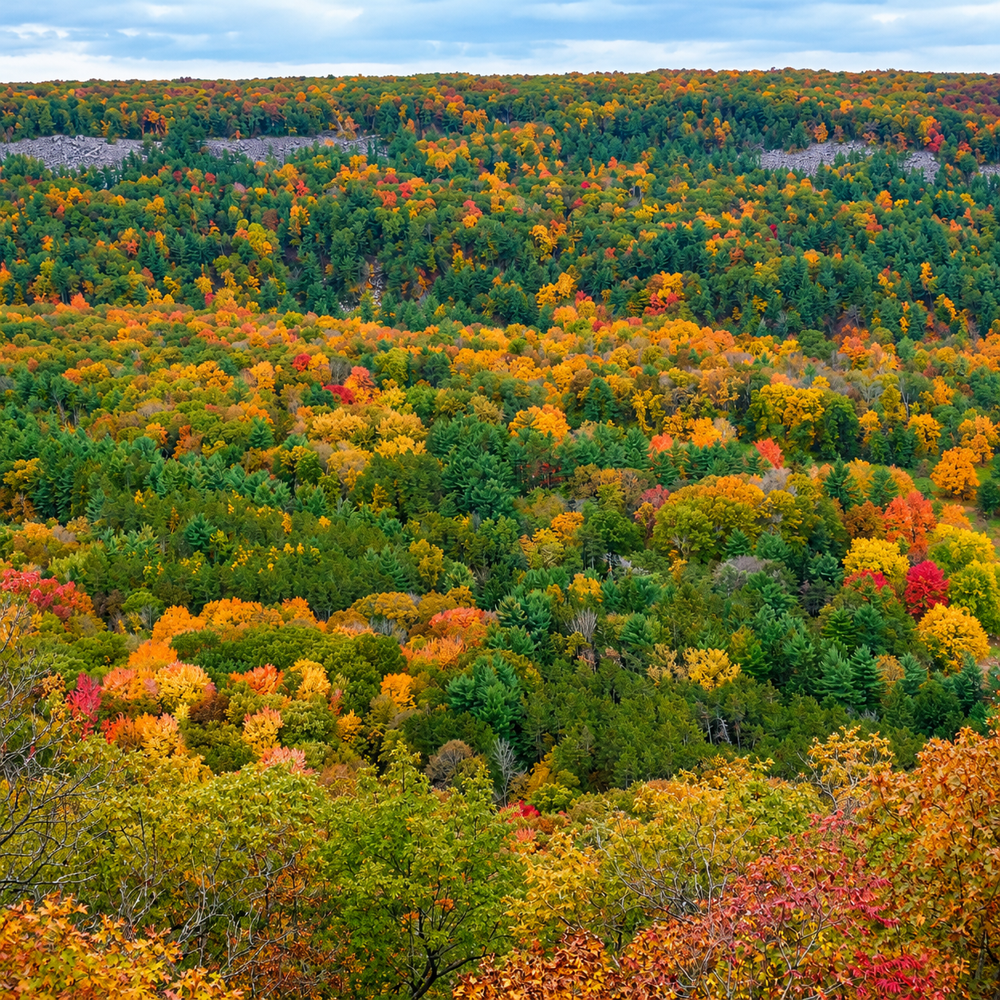
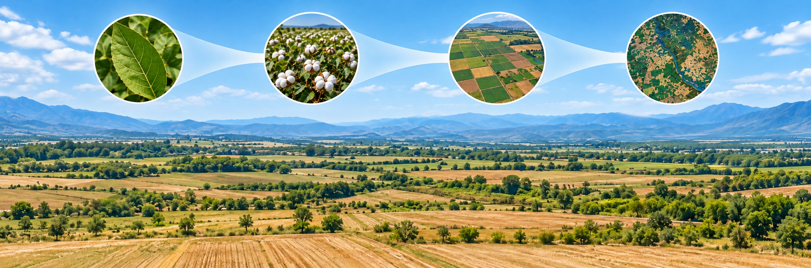

Research
RESEARCH VISION
How do climate change and human disturbance reshape ecosystem function?
I investigate plant functional traits and diversity, the ecological consequences of forest fragmentation, and the role of dryland biocrusts in ecosystem processes and climate feedbacks.

Tracking seasonal variability in plant traits from spaceborne PRISMA and NEON AOP across forest types and ecoregions
Select a figure to enlarge it. Use 100% to read it at its original size.
Plant traits serve as critical indicators of how plants adapt to environmental changes and influence ecosystem functions. While airborne hyperspectral remote sensing effectively maps plant traits through detailed reflectance properties, it is limited by cost and scale, making large-scale and temporal studies challenging. The recently launched spaceborne hyperspectral imager PRISMA offers frequent, large-scale and high-fidelity observations at 30 m spatial resolution with a revisit time of ~29 days — making it suitable for large-scale seasonal trait mapping.
This study developed a multi-stage framework by leveraging PRISMA spaceborne hyperspectral data and NEON Airborne Observation Platform (AOP) hyperspectral data to investigate the seasonal dynamics of four key plant traits — chlorophyll content (Chla+b), carotenoid content (Ccar), equivalent water thickness (EWT), and nitrogen content — across 11 NEON sites representing diverse forest types and ecoregions in the contiguous U.S.
- Research Questions:
- What are the capabilities of PRISMA data in quantifying seasonal variations of plant traits at large scales?
- How do plant traits vary within the growing season for different forest types and ecoregions, using NEON sites as representative examples?
- What factors control the spatial and seasonal variability of plant traits?
- Four-step framework:
- Processing the PRISMA hyperspectral data (BRDF correction, geo-referencing, cloud and non-vegetation removal).
- Generating NEON 1 m high-resolution trait maps using plot-level PLSR models applied to NEON AOP reflectance.
- Site-level PLSR modeling using upscaled NEON AOP trait maps and PRISMA reflectance + LAI as predictors to produce 30 m time-series trait maps.
- Analyzing seasonal variation of plant traits across NEON sites and identifying environmental drivers via random forest models.
- Key Findings:
- PRISMA reliably tracked seasonal variability in plant traits, achieving overall R2 = 0.78–0.88 and NRMSE = 5.4–8.4 % for all four traits.
- Seasonal patterns revealed bell-shaped trajectories for chlorophyll and carotenoids, driven by structural changes during leaf maturation and senescence. EWT decreased steadily across most sites. Nitrogen showed less pronounced seasonal variation, reflecting nutrient resorption patterns.
- Seasonal variability drivers: solar radiation and day length (northern sites); vapor pressure (semi-arid regions); temperature (mid-southeastern sites).
- Spatial variability was primarily driven by soil properties during the peak growing season, with climatic factors becoming more prominent toward the end of the season.
These findings highlight the capability of PRISMA for large-scale, time-series plant functional trait mapping and provide valuable insights into the interactions between plant traits and environmental factors, contributing to our understanding of plant functional ecology and improving predictions of ecosystem responses to environmental changes.
Leveraging transfer learning and leaf spectroscopy for leaf trait prediction with broad spatial, species, and temporal applicability
Select a figure to enlarge it. Use 100% to read it at its original size.
Accurate and reliable prediction of leaf traits is crucial for understanding plant adaptations to environmental variation, monitoring terrestrial ecosystems, and enhancing comprehension of functional diversity and ecosystem functioning.
Various approaches (e.g., statistical, physical models) have been developed to estimate leaf traits through hyperspectral remote sensing and leaf spectroscopy. However, the absence of high-performing, transferable, and stable models across various domains of space, plant functional types (PFTs) and seasons hinder our ability to quantify and comprehend spatiotemporal variations in leaf traits.
This study proposes robust and highly transferable models for better predicting leaf traits with hyperspectral reflectance. Three datasets were assembled, pairing common leaf traits — chlorophyll (Chla+b, µg/cm2), carotenoids (Ccar, µg/cm2), leaf mass per area (LMA, g/m2), equivalent water thickness (EWT, g/m2) — with leaf spectra measurements collected across diverse geographic locations in the U.S. and Europe, PFTs, and seasons.
- Research Questions:
- Do our proposed transfer learning models have better performance than PLSR, GPR, and pure RTMs?
- Are the transfer learning models more transferable across different geographic locations, PFTs, and seasons?
- How do inconsistency and quantity of real observations used for fine-tuning influence model performance?
- Framework — four steps:
- Pure radiative transfer modeling.
- Transfer learning modeling.
- Statistical modeling.
- Model performance assessment.
Through comparison with PLSR, GPR, and pure physical models, the proposed transfer learning models achieved better predictive performance and higher transferability.
Unveiling the transferability of PLSR models for leaf trait estimation: lessons from a comprehensive analysis with a novel global dataset
Select a figure to enlarge it. Use 100% to read it at its original size.
Leaf traits are essential for understanding many physiological and ecological processes. PLSR models with leaf spectroscopy are widely applied for trait estimation, but their transferability across space, time and plant functional types (PFTs) remains unclear.
- Research Questions:
- How well do PLSR models transfer to new domains (new sites, PFTs and time)?
- What are the potential factors influencing the transferability of PLSR?
- Hypotheses:
- Models can expect accurate predictions within the training data range; performance declines when extrapolating to new domains.
- Greater spectral diversity in training yields better PLSR transferability.
We compiled a novel dataset of paired leaf traits and spectra, with 47,393 records for >700 species and eight PFTs at 101 globally-distributed locations across multiple seasons.
- Leaf spectra: 450–2400 nm, 10 nm interval.
- Total chlorophyll (Chla+b, µg/cm2): 6,840 samples.
- Total carotenoid (Ccar, µg/cm2): 4,233 samples.
- Equivalent water thickness (EWT, g/m2): 3,581 samples.
- Leaf mass per area (LMA, g/m2): 45,417 samples.
- 8 PFTs: ENF, EBF, DNF, DBF, SHR, GRA, CRP, Vine.
While PLSR models demonstrate commendable performance within their training data space, their efficacy diminishes when extrapolating to new contexts. Extrapolating to locations, seasons, and PFTs beyond training data leads to reduced R2 (0.12–0.49) and increased NRMSE (3.58–18.24%) compared to nonspatial random cross-validation (NRCV).
Alpha and beta spectral diversity exhibited positive relationships — greater similarity of spectral diversity yielded greater PLSR transferability.
Robust hyperspectral reconstruction from satellite and airborne observations via a deep hierarchical fusion network across heterogeneous scenarios
Select a figure to enlarge it. Use 100% to read it at its original size.
High spatial resolution hyperspectral imagery (HR-HSI) is essential for fine-scale ecological and environmental monitoring, yet current spaceborne sensors are constrained by a trade-off between spectral and spatial resolution. Hyperspectral reconstruction through data fusion offers a promising pathway to generate HR-HSI, but most existing approaches are trained on synthetic, perfectly aligned datasets and their performance under real cross-sensor conditions remains uncertain.
This study develops a deep learning fusion framework that reconstructs HR-HSI by integrating low-resolution hyperspectral imagery from NASA's EMIT (60 m, 285 bands) with high-resolution multispectral imagery from PlanetScope (3–5 m, 8 bands). The model was evaluated across three ecologically distinct landscapes in the western United States using airborne AVIRIS-3 and SHIFT imagery as reference data.
- Research Questions:
- How do existing fusion models and the proposed architecture perform and generalize when applied to real, cross-platform remote sensing data?
- How does model complexity affect the accuracy and effectiveness of hyperspectral reconstruction?
- The proposed framework consistently outperformed seven peer state-of-the-art fusion models, achieving a best SAM of 2.64 and RMSE of 0.0267.
- Stratified analyses across vegetation density gradients, spectral subregions (VIS, NIR, SWIR), and pixel-level distributions demonstrated strong robustness in heterogeneous landscapes.
- A sensor inter-calibration pipeline ensured radiometric consistency between EMIT and PlanetScope, improving the reliability of the fusion inputs.
- The proposed models (1.5M parameters) outperform much larger models like DSSFNet (313M parameters), demonstrating that architectural efficiency matters more than brute-force complexity.
Plant functional trait estimation from PlanetScope–EMIT reconstructed high-resolution hyperspectral imagery reveals spectral-spatial fidelity trade-offs
Research question: How well can reconstructed high-resolution hyperspectral imagery support plant functional trait estimation, and how does the balance between spectral fidelity and spatial detail affect the results?
Approach: This manuscript evaluates nine deep learning fusion models combining PlanetScope multispectral imagery with NASA EMIT hyperspectral observations to reconstruct 5 m imagery and estimate 13 plant functional traits. Independent airborne AVIRIS-NG trait maps from the NASA SHIFT campaign provide the reference for evaluation.
Findings reported in the manuscript: Fused hyperspectral imagery improves trait estimation over coarse-resolution inputs, while spectral-spatial fidelity trade-offs influence its suitability for quantitative trait mapping.
Status: Under review at Remote Sensing of Environment. First author.
Episodic changes in global forest edges in the 21st century
Research question: How have forest edges changed globally, and how do land management and fragmentation contribute to these changes?
Approach: The study developed high-resolution global forest edge maps for 2000–2020 to examine temporal changes in edge length and contrasting patterns across biomes and countries.
Key findings: Global forest edge length declined by 24 million km (7%) between 2000 and 2020. These episodic changes closely tracked policy-driven land management, including logging bans, agricultural expansion, and reforestation. Patch merging and fragmentation produced different patterns across regions.
Ecological relevance: Forest edge dynamics matter for biodiversity, microclimate regulation, and the balance between conservation, carbon storage, and land use. This collaborative study provides context for investigating the functional consequences of forest fragmentation.
Forest edges impose a global syndrome on canopy function
Research question: How does distance from a forest edge structure canopy functional traits and spectral diversity across global forests?
Approach: This ongoing analysis uses NASA EMIT imaging spectroscopy to examine 49 hyperspectral indices representing ten canopy functional groups across 2,371 peak-growing-season scenes worldwide. It connects forest edge gradients with canopy water status, pigments, structural and chemical properties, and spectral heterogeneity.
Research focus: The manuscript examines coordinated differences between forest edges and interiors and how the depth of edge influence varies among canopy functional properties. The aim is to connect global fragmentation patterns with ecosystem function.
Status: Manuscript in preparation. Co-first author and co-corresponding author.
Experimental evidence of a biological soil crust degradation climate warming amplification feedback
Research question: How do climate-driven changes in biocrust community composition affect ecosystem processes and feed back to climate?
Approach: This collaborative study combines multiscale remote sensing with a two-decade climate manipulation experiment in Castle Valley, Utah, linking changes in cyanobacteria, lichens, and mosses with soil-surface properties.
Key findings: Sustained warming and altered rainfall shifted communities away from late-successional mosses toward early-successional, lightly-pigmented cyanobacteria. The shift was associated with lower photosynthetic potential and surface moisture, greater surface brightness, and higher daytime surface temperature.
Ecological relevance: The results provide experimental evidence of a biocrust degradation–warming amplification feedback and highlight the need to represent changing biocrust communities in process-based models.
Hyperspectral reflectance reveals climate change–driven successional regression in dryland biocrust communities
Research question: Can hyperspectral reflectance quantify changes in biocrust functional types under long-term warming and altered precipitation?
Approach: The manuscript combines spectral unmixing and deep learning to estimate the fractional cover of major biocrust functional types from mixed hyperspectral pixels. It evaluates these estimates against observations from a long-term climate manipulation experiment.
Findings reported in the manuscript: Hyperspectral estimates reproduce the observed decline in late-successional cover and increase in early-successional cover under combined warming and altered precipitation. Visible-range pigment absorption features are dominant predictors, with additional information from red-edge and shortwave-infrared wavelengths.
Status: Under review at Global Change Biology. First author and co-corresponding author. The work offers a pathway for extending biocrust monitoring from field plots to landscapes.
From biocrust organic constituents to spaceborne mapping: A transferable hyperspectral framework for drylands
Research question: Can diagnostic spectral responses of biocrust organic constituents support transferable mapping across dryland regions?
Approach: Spectral measurements from eight dryland regions are analyzed using PLS regression and discriminant analysis. The framework targets photosynthetic and protective pigments, soil organic matter, and cellulose, and applies constituent-related indices to EnMAP and EMIT imagery.
Findings reported in the manuscript: Five consistent spectral regions are identified and combined into constituent-related indices, connecting ground spectroscopy with spaceborne mapping.
Status: Under review at ISPRS Journal of Photogrammetry and Remote Sensing. Co-author.
Reflectance spectroscopy enables robust classification of biocrust successional stages under dry and wet conditions
Research question: Can reflectance spectroscopy distinguish biocrust successional stages under both dry and wet conditions?
Approach: The manuscript uses a 350–2500 nm spectroscopy library of more than 700 samples spanning dry and wet conditions. A hierarchical scheme separates biocrusts from bare soil and resolves lightly-pigmented cyanobacteria, darkly-pigmented cyanobacteria, nitrogen-fixing lichens, non-nitrogen-fixing lichens, and mosses.
Research focus: The work evaluates classification across the successional sequence and identifies informative wavelength regions to support monitoring with narrow-band imaging spectroscopy.
Status: Under review at Environmental Research: Ecology. Co-author.
New opportunities for global monitoring of vulnerable biological soil crust
Research question: How can emerging imaging spectroscopy missions make vulnerable biocrust communities observable from space?
Research focus: This perspective examines how diagnostic signals of pigments, hydration, organic matter, and mineral substrates can support estimates of biocrust cover, composition, and condition.
Proposed direction: The manuscript brings together spectral-spatial fusion, machine learning upscaling, and a coordinated ground observation network (CrustNet), with the goal of tracking degradation, recovery, and climate-driven community change.
Status: Manuscript in preparation. First author and co-corresponding author.
NASA Earth Surface Mineral Dust Source Investigation (EMIT) – Dryland Ecosystem Mapping with Multiscale Hyperspectral Remote Sensing
Research focus: Mapping plant and soil community composition and functional diversity across the Colorado Plateau and global drylands.
My contribution: Integrating NASA EMIT with drone, airborne, and satellite observations to develop maps of biocrust cover, community composition, and function.
Approach: The project connects EMIT imaging spectroscopy with complementary drone observations, airborne GEMx data, and satellite datasets including EnMAP and PACE. It emphasizes biological soil crust communities of cyanobacteria, mosses, and lichens and their roles in soil stabilization, fertility, water cycling, and carbon exchange.
Collaboration: Working with Prof. William Smith at the University of Arizona, the NASA EMIT Science and Applications Team, and researchers at the U.S. Geological Survey. Postdoctoral Research Associate; January 2026–present.

Crop Yield Estimation at Field Scales by Assimilating Time Series of Sentinel-2 Data into a Modified CASA-WOFOST Coupled Model
Select a figure to enlarge it. Use 100% to read it at its original size.
Rapidly and accurately estimating yields at field scales is very significant. Each type of currently used yield estimation model has been well studied, yet all have certain limitations. Based on a coupled Carnegie-Ames-Stanford approach (CASA)–World Food Studies (WOFOST) model and time series Sentinel-2 imagery, we achieved daily crop simulations and crop yield estimations at two adjacent farms in China.
- Compared with the WOFOST model, the coupled CASA-WOFOST model provided a much faster running speed in yield simulations and similar accuracy.
- Compared with the CASA model, the coupled model provided higher simulation accuracy in mountainous areas and regions of uneven terrain.
Comparison of Machine Learning Regression Algorithms for Cotton Leaf Area Index Retrieval Using Sentinel-2 Spectral Bands
Select a figure to enlarge it. Use 100% to read it at its original size.
Leaf area index (LAI) is a crucial crop biophysical parameter widely used in various fields. Five machine learning regression algorithms (MLRAs) — ANN, SVR, GPR, Random Forest, and Gradient Boosting Regression Tree (GBRT) — were used to retrieve cotton LAI with Sentinel-2 spectral bands. The performances of the five models are compared for better applications of MLRAs in remote sensing.
We conducted the comparison of five MLRAs in an agricultural area of Northwest China over three cotton seasons with corresponding field campaigns for modeling and validation. Results show that the GBRT model outperforms the other models with respect to model accuracy on average.
A connected approach
From signals to understanding.
-
Measure
Field spectroscopy, plant traits, and ecological experiments reveal the biological meaning of spectral signals.
-
Scale
Radiative transfer, machine learning, and data fusion connect field observations with drone, airborne, and satellite measurements.
-
Understand
Functional observations and ecosystem models help explain responses to fragmentation, disturbance, and climate change.
Future directions
Making ecosystem function observable.
My next steps connect physical models, machine learning, and ecological experiments to reveal how ecosystem function changes and recovers across scales.
-
Transferable retrievals
Combine physical models and machine learning to improve transferability and quantify uncertainty.
-
Finer-scale function
Resolve functional heterogeneity from plants and patches to landscapes.
-
Change & recovery
Link observations, experiments, and ecosystem models to study fragmentation, climate extremes, and biocrust vulnerability.